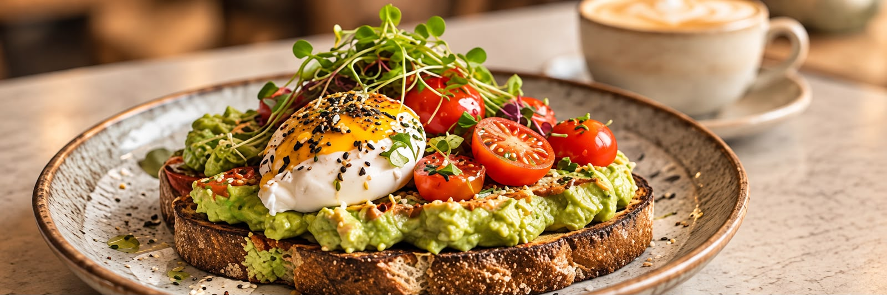
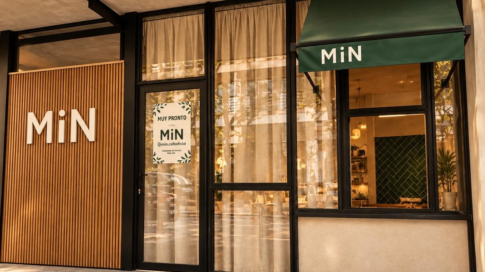
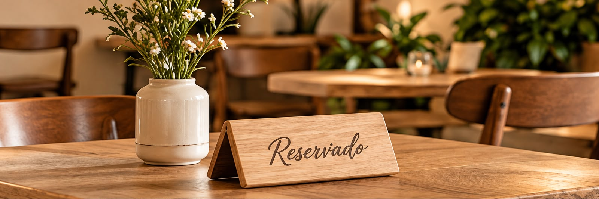

Sobre MiN
Más que un café, un lugar para vos.
MiN es una cafetería pensada para disfrutar, encontrarse y bajar un poco el ritmo. La propuesta combina café, comida rica y un ambiente tranquilo, con una identidad cálida y cercana.
Conocer el espacio
Recorré el sitio
Todo MiN en un mismo lugar
